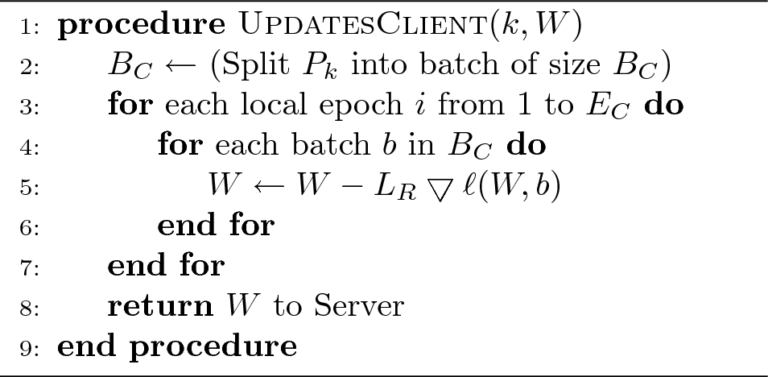

Algorithms
Federated Learning Overview
Federated Learning (FL) is a decentralized learning approach where multiple clients (devices) collaboratively train a model while keeping their data localized. The server aggregates updates from each client to form a global model without accessing raw data.
Federated Averaging (FedAvg)
FedAvg is the most common algorithm in FL, aggregating model updates by computing a weighted average of each client’s model parameters. This method ensures that no client’s data leaves its device, preserving privacy while maintaining model accuracy.
Client Update Process
Clients perform local training on their datasets using a fixed number of epochs and then share model updates with the central server. The server aggregates these updates to improve the global model iteratively. The process repeats over several communication rounds.
Data Partitioning and Training
The dataset is partitioned among clients to ensure diverse data representation during training. Each client trains on their local subset of data, which includes both healthy and diseased plant images, ensuring that the global model learns robust features across different conditions.
Secure Multi-party Computation (SMC)
SMC-based methods are used in federated learning to ensure that even during model aggregation, individual data points remain secure. This adds an extra layer of privacy by ensuring that computations do not reveal any specific client’s contributions.
Algorithms Used in Crop Disease Detection
We used several advanced algorithms in this research for image classification and disease detection. Below are the details:
Algorithm 1: CNN Training Pipeline
This algorithm involves training a Convolutional Neural Network (CNN) model with data from various crops, classifying them as healthy or diseased based on image inputs.
Algorithm 2: Federated Learning Setup

The Federated Learning setup allows multiple devices to collaboratively train models while maintaining data privacy, ensuring that raw data stays on each local device while sharing only model updates.